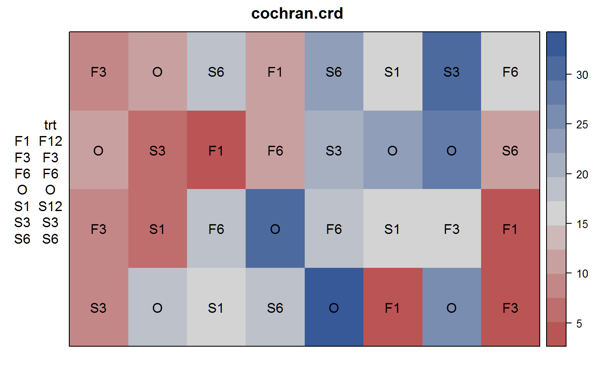

cochran.crd.RdPotato scab infection with sulfur treatments
A data frame with 32 observations on the following 5 variables.
infinfection percent
trttreatment factor
rowrow
colcolumn
The experiment was conducted to investigate the effect of sulfur on controlling scab disease in potatoes. There were seven treatments. Control, plus spring and fall application of 300, 600, 1200 pounds/acre of sulfur. The response variable was infection as a percent of the surface area covered with scab. A completely randomized design was used with 8 replications of the control and 4 replications of the other treatments.
Although the original analysis did not show significant differences in the sulfur treatments, including a polynomial trend in the model uncovered significant differences (Tamura, 1988).
W.G. Cochran and G. Cox, 1957. Experimental Designs, 2nd ed. John Wiley, New York.
Tamura, R.N. and Nelson, L.A. and Naderman, G.C., (1988). An investigation of the validity and usefulness of trend analysis for field plot data. Agronomy Journal, 80, 712-718.
http://doi.org/10.2134/agronj1988.00021962008000050003x
library(agridat) data(cochran.crd) dat <- cochran.crd # Field plan libs(desplot) desplot(inf~col*row, data=dat, text=trt, cex=1, # aspect unknown main="cochran.crd")# CRD anova. Table 6 of Tamura 1988 contrasts(dat$trt) <- cbind(c1=c(1,1,1,-6,1,1,1), # Control vs Sulf c2=c(-1,-1,-1,0,1,1,1)) # Fall vs Sp m1 <- aov(inf ~ trt, data=dat) anova(m1)#> Analysis of Variance Table #> #> Response: inf #> Df Sum Sq Mean Sq F value Pr(>F) #> trt 6 972.34 162.057 3.6081 0.01026 * #> Residuals 25 1122.88 44.915 #> --- #> Signif. codes: 0 '***' 0.001 '**' 0.01 '*' 0.05 '.' 0.1 ' ' 1#> Df Sum Sq Mean Sq F value Pr(>F) #> trt 6 972.3 162.1 3.608 0.01026 * #> trt: Control vs Sulf 1 518.0 518.0 11.533 0.00229 ** #> trt: Fall vs Spring 1 228.2 228.2 5.080 0.03322 * #> Residuals 25 1122.9 44.9 #> --- #> Signif. codes: 0 '***' 0.001 '**' 0.01 '*' 0.05 '.' 0.1 ' ' 1# Quadratic polynomial for columns...slightly different than Tamura 1988 m2 <- aov(inf ~ trt + poly(col,2), data=dat) anova(m2)#> Analysis of Variance Table #> #> Response: inf #> Df Sum Sq Mean Sq F value Pr(>F) #> trt 6 972.34 162.057 7.1253 0.0002205 *** #> poly(col, 2) 2 599.76 299.881 13.1850 0.0001531 *** #> Residuals 23 523.11 22.744 #> --- #> Signif. codes: 0 '***' 0.001 '**' 0.01 '*' 0.05 '.' 0.1 ' ' 1#> Df Sum Sq Mean Sq F value Pr(>F) #> trt 6 972.3 162.1 7.125 0.000221 *** #> trt: Control vs Sulf 1 518.0 518.0 22.776 8.21e-05 *** #> trt: Fall vs Spring 1 228.2 228.2 10.032 0.004301 ** #> poly(col, 2) 2 599.8 299.9 13.185 0.000153 *** #> Residuals 23 523.1 22.7 #> --- #> Signif. codes: 0 '***' 0.001 '**' 0.01 '*' 0.05 '.' 0.1 ' ' 1